This is the second post about EPV. Click here for the first post.
Introduction
In a MIT Sloan Sports Analytics Conference Research Paper, Cervone, D’Amour, Bornn, and Goldsberry create a metric called Expected Possession Value, EPV. They use optical player tracking data to calculate the number of points the offense is expected to score by the end of the possession in real time, given everything we know now. In other words, EPV of a possession is the weighted average of the outcomes of all future paths that the possession could take (Cervone et al.)
The optical player tracking data is generated with STATS SPORTVU, a six-camera system installed in basketball arenas to track the real-time positions of players and the ball 25 times per second.

The model breaks down a possession into discrete (macrotransitions) and continuous actions (microtransitions). Macrotransitions include passes, shots, and turnovers whereas microtransitions are defined as every other movement that players make with the ball.
Mathematically,

A snapshot of a single possession in a game between the Spurs and Thunder illustrates the practicality of EPV:
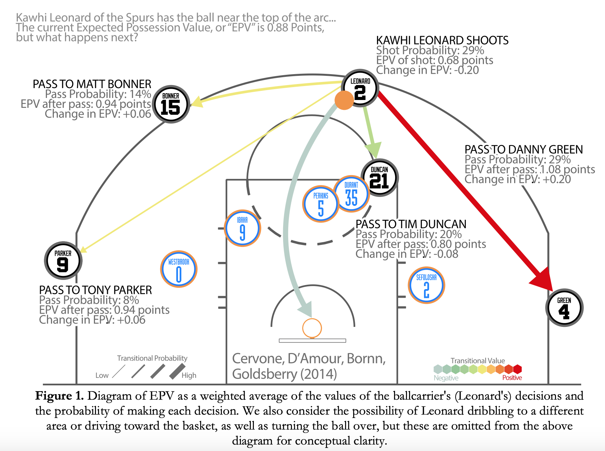
Since EPV is calculated in real time, the authors of the paper interpret EPV as a stock ticker. This lends itself well to an augmented graph where we have the spatial configuration of players on top and the stock ticker representation of EPV on the bottom:

The above graph is best explained by the authors:
Consider the following possession from the Spurs/Cavaliers game on February 13, 2013. Down by 2 with less than 10 seconds left, the Spurs inbounded to Tony Parker, who drove to the basket, drawing defenders into the paint and leaving Kawhi Leonard wide open in the corner. Instead of attempting the tightly contested layup that would tie the game, Parker dished to a wide-open Leonard, who promptly sank the game-winning 3-pointer, almost unchallenged by the defense. While Leonard’s 3-pointer was this possession’s (and game’s) “checkmate”, we see from Figure 2 how valuable Parker was in setting it up. Parker actually dramatically increased the value of the possession twice - first by driving towards the basket, and then by passing to Leonard.
I would like to extend this work by animating the above graph using gganimate and interpreting each movement during a NBA game on November 10th, 2013, between the Miami Heat vs Brooklyn Nets within the context of Expected Possession Value. Unlike a static graph, an animated graph conveys a strong, clear narrative that help teams understand their tracking data.
A couple of notes: EPV is calculated as soon as the ball crosses the mid court line and the jersey numbers on each player are scraped from Swish Analytics. The site reflects recent jersey numbers, which means Lebron James is #23 in the animations even though he wore #6 for the Miami Heat.
This work was enabled by Dan Cervone’s data and code.
The code used in this post is stored here
Frantic Action leading to Terry 3-Pointer


As the ball rolls toward the sidelines, two Heat players double team Paul Pierce (#34), who dishes off to Andrei Kirilenko (#47). Then, the Nets incrementally increase the value of the possession by passing the ball twice, from Kirilenko to Andray Blatche (#0) and from Blatche to a wide open John Terry (#3), who knocks down the 3-pointer. During this sequence of events, EPV increases like a step function with each pass, resulting in a high percentage 3-point shot.
The previous EPV post talks about a similar play, “Frantic Action leading to Chalmers 3-Pointer”, where the ball is in no man’s land and EPV perfectly plateuas around 1.035. In this possession, there is no one around the ball. Consequently, EPV, a metric that seems to account for the proximity of players around the ball, shows absolutely no change. On the other hand, in the beginning of this possession, when the ball is rolling towards the slidelines, EPV does not perfectly plateua. The reason is, I think, that in this posession, the ball is surrounded by three players who are chasing it and EPV accounts for the proximity of these players, thus changing slightly.
Lebron James Alley-Oop


Rashard Lewis (#21) steals the pass from Pierce and dishes off to Lebron James (#23), who passes to Mario Chalmers (#6). On a fast break, Chalmers drives toward the basket with James and EPV jumps from just below 1.00 to more than 1.30, which illustrates a high value play. As Chalmers throws the ball up for a James’s alley-oop, EPV spikes to above 1.5, responding to the situation where James has a wide open opportunity to throw down 2 points. Lastly, as the ball is no longer in play, EPV plateaus, just like when the ball is in no man’s land during “Frantic Action leading to Chalmers 3-Pointer”. For the first time, we see the EPV dynamics of a fast break: the attacking team starts the possession with a EPV significantly higher than the EPV of a NBA baseline possession, 1.00.
Miami Heat Set Play
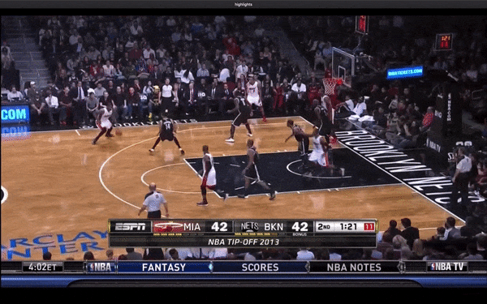
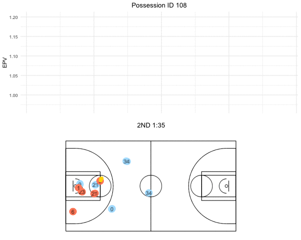
This possession looks like a set play by Erik Spoelstra and the Heat. After Chalmers passess off to James, he knows exactly what is about to happen. He sneaks out to the corner 3-point position, losing his defender, Paul Pierce. While James drives the basket, Pierce stays in the paint trying to stop James. However, James knows exactly what to do next: dish off to a wide open Chalmers for an easy 3-point shot. As James passes to Chalmers, EPV spikes from 0.96 to 1.15, signifying a very positive contribution to the offense. Furthermore, judging from Chalmers’ body language (wide open arms), he was fully expecting the ball. All in all, this set play entails many fluctuations in EPV, but I believe it is a successful one because it culminates in an optimal 3-point shot; it was taken at the highest EPV in the entire possession.
Elite Passing from Derron Williams


As Kevin Garnett (#21) screens for Derron Williams (#31), EPV slightly increases, demonstrating a positive contribution. Eventually, Williams finds open space and drives the basket, pulling in another defender. This leaves Joe Johnson (#7) open for an easy 3-point shot. As Williams drives the basket and dishes off to a wide open Johnson, EPV skyrockets from 0.95 to 1.50. This immense jump in EPV proves that Williams is an elite point guard; his ability to use the screen to find open space, draw defenders, and ultimately distribute the ball into optimal space for his teammates entails a tremendous increase in EPV.
James flies through the air


EPV is erratic as the Heat pass the ball around quite a bit in this possession. A notable change in EPV occurs when James finds a temporarily wide open Chalmers outside the 3-point line; EPV jumps from 0.95 to approximately 1.17. The defender closes in on him quickly and instead of shooting, Chalmers yields to a closely guarded Ray Allen (#34), decreasing EPV to 0.90. Allen forgoes the contested shot and finds James in the middle of the court. As James flies through the air towards the basket, EPV steadily increases to the maximum value in this possession (1.20), indicating that the Heat executed well by putting the ball in James hands.
James’ incredible offensive ability


Norris Cole (#30) uses the screen set by Chris Bosh (#1) to beat his defender and drive the basket. During this drive, EPV spikes up from below 1.0 to more than 1.2. As seen in the film, the play ends on an isolation with the ball in James hands. As soon as he fakes one way and goes the other way, EPV increases tremendously from 1.02 to 1.60, revealing that James one-on-one talent is exceptional. The play concludes with James scoring an easy layup, demonstrating that James made the difference in this possession in terms of EPV with his one-on-one play.


In this possession, not much happens until the point guard throws the ball up for a James alley-oop. Again, as James throws down the dunk, EPV catapults instantly, from approximately 1.00 to more than 1.50. EPV demonstrates Lebron’s offensive awareness and ability to exploit the space near the basket.
Wade’s Smarts


Instead of shooting a contested 3-pointer, Dwayne Wade (#3) wisely uses the screen set by his teammate and slips away from his defender, increasing EPV. Using the newly created space by the screen, Wade knocks down a 2-pointer. EPV demonstrates Wade’s offensive smarts; when Wade is closely defended, EPV plummets to under 1.00, but when Wade uses the screen to make space for himself, EPV rises to above 1.03.
When ball goes to Lebron James, #23, EPV spikes up from 0.96 to more than 1.03, signifying that James is an excellent shooter. This reasoning is explained in the paper, in page 20, “our model estimates largely agree with basketball intuition… because LeBron James is a better shooter than Norris Cole, the value of his shot attempt is higher…”
Observing Bosh’s Shot with EPV
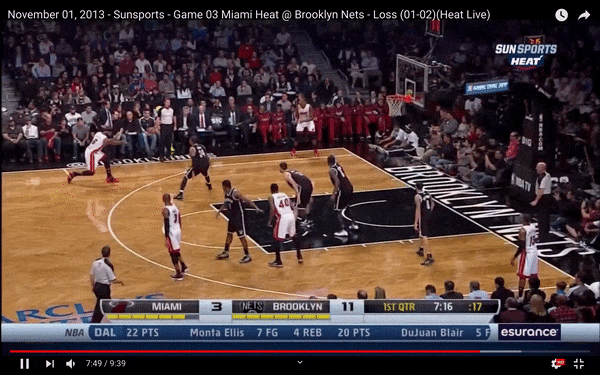

Wade slowly dribbles up the court and surveys the defense’s formation. Wade seems to use the screen to go around his defender, but realizes that Bosh is wide open in the corner and passes off to James, who instantly relays to Bosh. As Wade passes to James, EPV rises marginally, but when James passes to Bosh, who is in position for a wide open 3-pointer, EPV shoots up from 1.12 to 1.62. Notably, with so much time and space, Bosh winds up for the shot leading to a decrease in EPV to 1.40. This illustrates that the more time he takes to take the shot, the lower the EPV because a defender could close down on him at any second and take away the wide open shot.

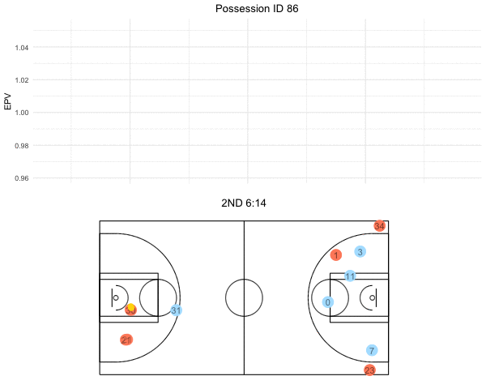
The most important and interesting moment during this possession is Bosh’s 2-point shot just inside the 3-point line. EPV falls off from above 1.05 to 0.98. Perhaps, EPV plummets at this time because Bosh is attempting a long range 2-point shot instead of taking a couple steps backwards and attempting a 3-pointer, which is 50% more valuable. Another explanation could be the congestion around the paint. There are four defenders around the paint- John Terry is the only defender far from the paint and defending Ray Allen and his deadly 3-point shot. Bosh has very little real estate to work with.
Drawback of EPV: Defensive Details
First Possession
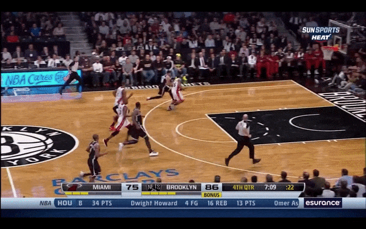

Second Possession
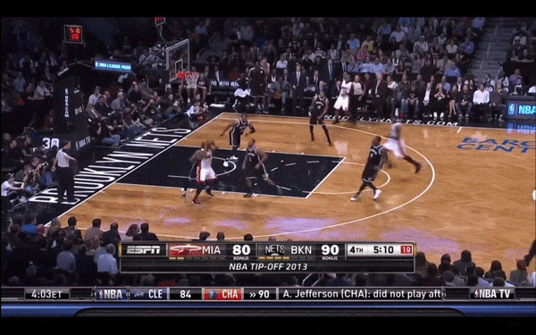

EPV does not account for defensive plays such as blocks. In the first possession, Bosh blocks the shot, but EPV doesn’t decrease at all. Instead, it just plateaus at 1.3 while the ball is rolling towards the sidelines. In the second possession, Pierce swats away a James layup, but EPV also just plateaus at 1.15. The reason is elaborated by the authors of EPV in their theoretical paper, “A Multiresolution Stochastic Process Model for Predicting Basketball Possession Outcomes”
A number of smaller details could also be addressed…we also do not distinguish between different types of turnovers (steals, bad passes, ball out of bounds, etc.), though this is due to a technical feature of our data set. Indeed, regardless of the complexity and refinement of an EPV model, we stress that the full resolution data still omits key information, such as the positioning of players’ hands and feet, their heights when jumping, and other variables that impact basketball outcomes. As such, analyses based on EPV are best accompanied by actual game film and the insight of a basketball expert”
Conclusion
Using EPV to analyze plays like this blog post allows coaches and analysts to put their players in the best position to succeed, which means making plays that yield maximum EPV. Expected Possession Value confirms and quantifies our basketball intuition of a valuable play: a wide open 3-point shot, a fast break in an odd man situation, or penetrating the defense for an easy layup or jumper. However, a shortcoming of EPV is its failure to account for defensive turnovers such as a block. As a result, like this blog post, coaches and analysts should combine EPV analysis with game film for the most accurate representation of a play. I’d like to end this post with a memorable quote from the authors:
These insights, which can be reproduced for any valid NBA possession in our data set, have the potential to reshape the way we quantify players’ actions and decisions
Appendix
This section contains static plots of the above EPV curves with event annotations such as “Pass”, “Assist”, or “Shot Made”. These static curves allow coaches and analysts to attribute a change in EPV to an event in the dataset with pinpoint accuracy.
Frantic Action leading to Terry 3-Pointer
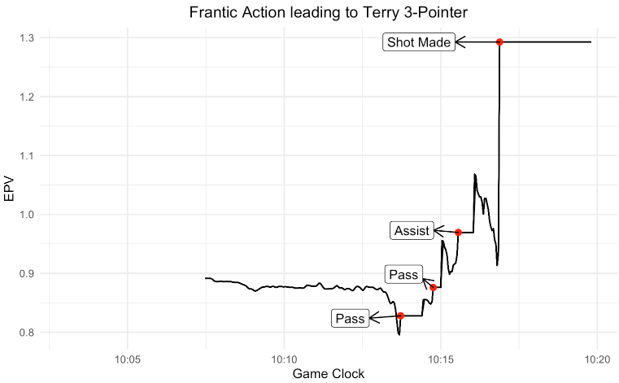
Lebron James Alley-Oop

Miami Heat Set Play

Elite Passing from Derron Williams
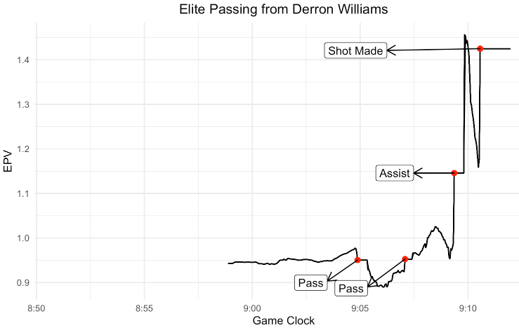
James flies through the air

James’ incredible offensive ability
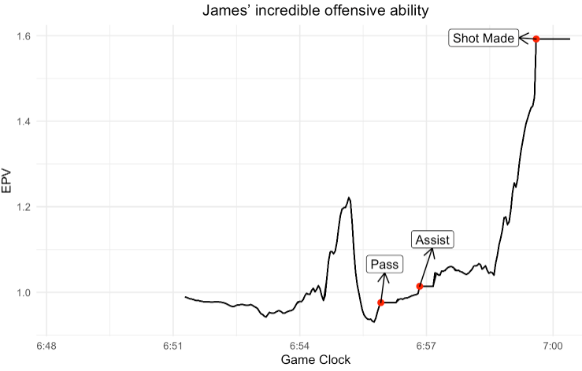
James’ Alley-oop

Wade’s Smarts

Bosh Wide Open 3-Pointer
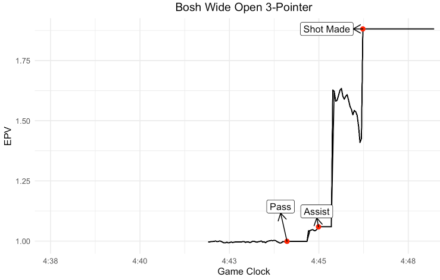
Bosh Long Range 2-Pointer
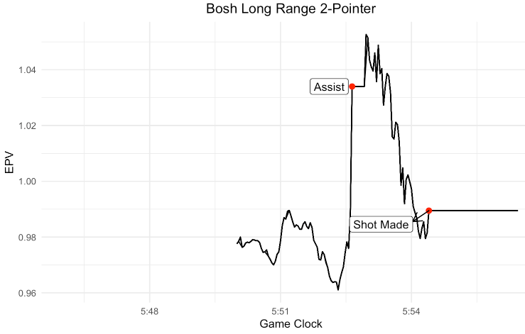